Static pages on the game's own font and tokens (kit.css), for docs/superpowers/specs/2026-10-06-gui-design.md. Each picture opens its page in that state; every page lists its states at its top (?state=). The gnomes' art is the picker's 14 renders standing in for the catalogue's.
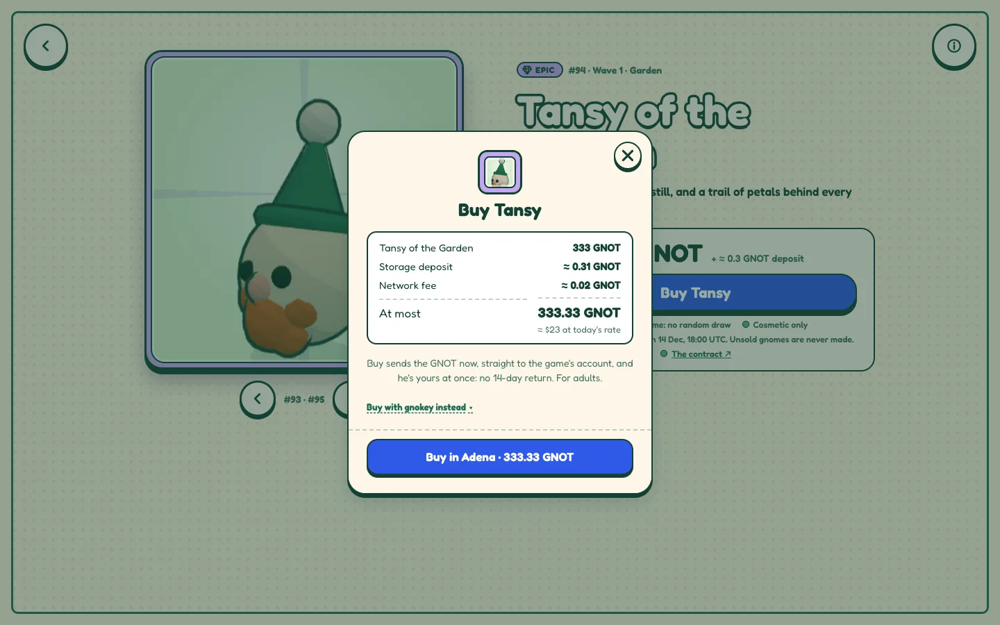
default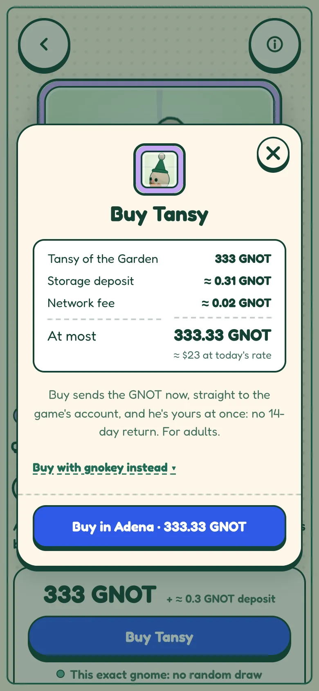
default · phone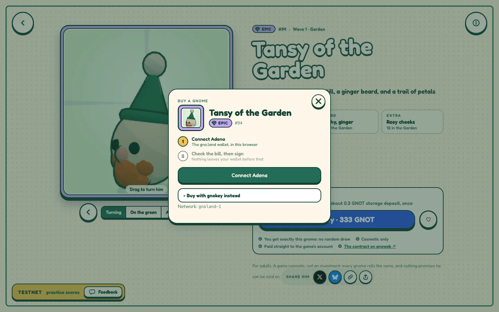
connect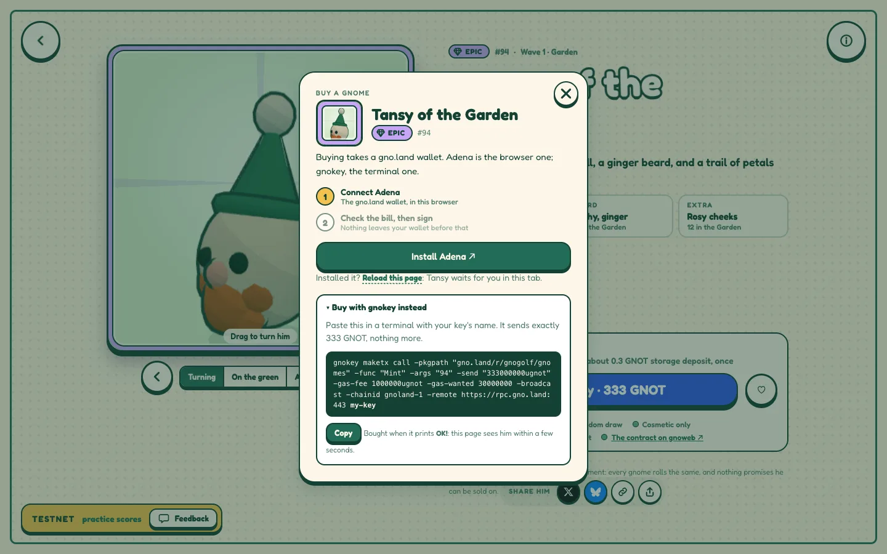
nowallet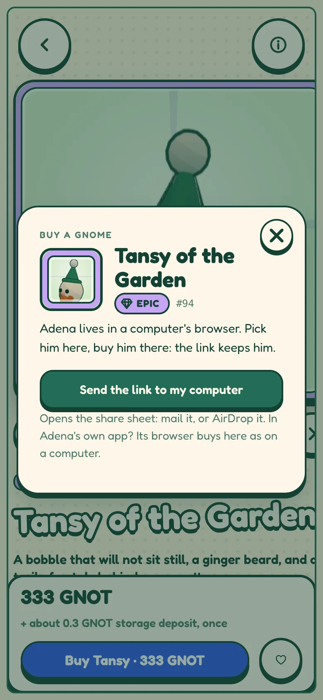
elsewhere · phone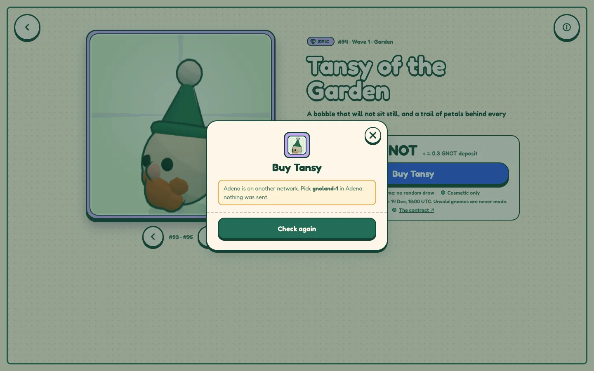
network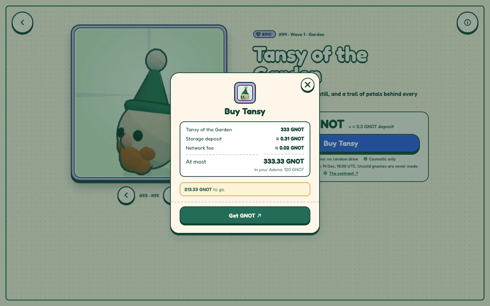
short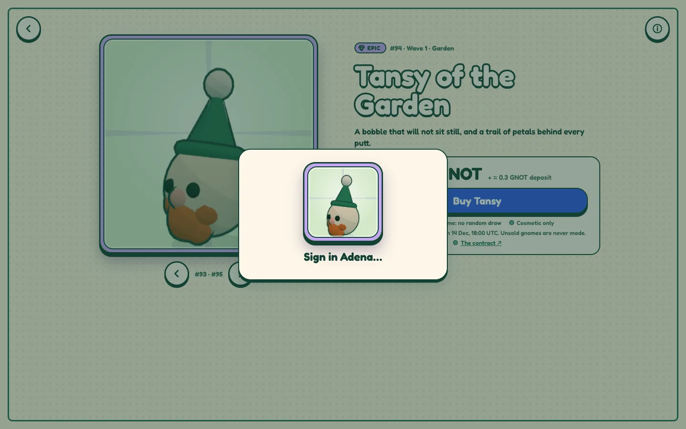
pending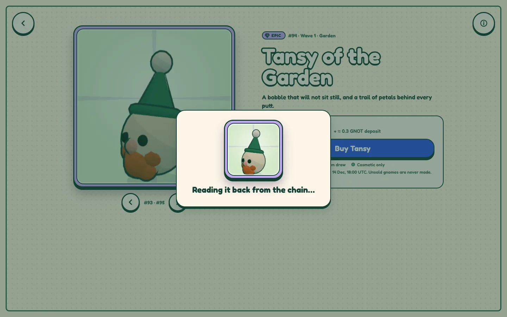
reading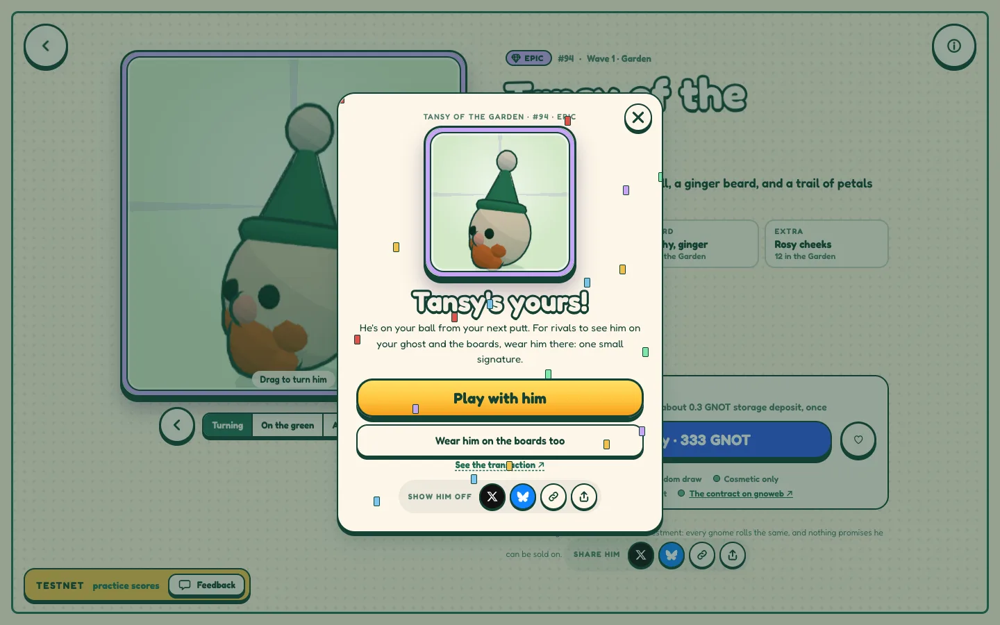
success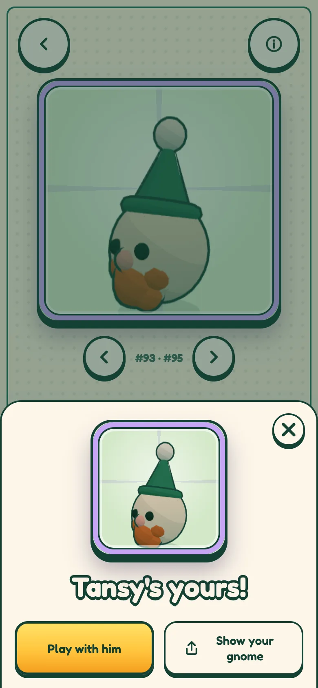
success · phone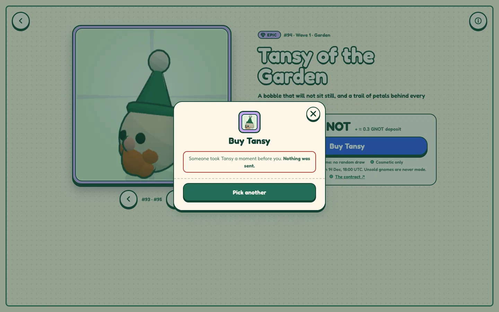
taken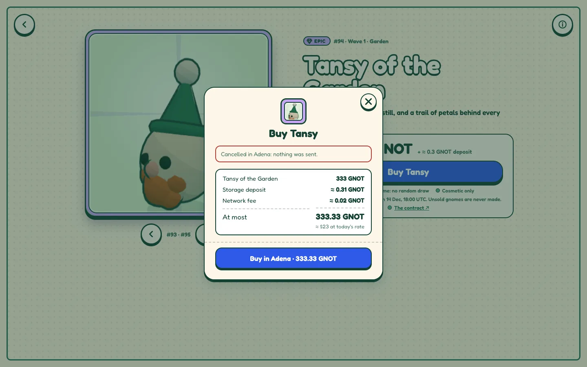
cancelled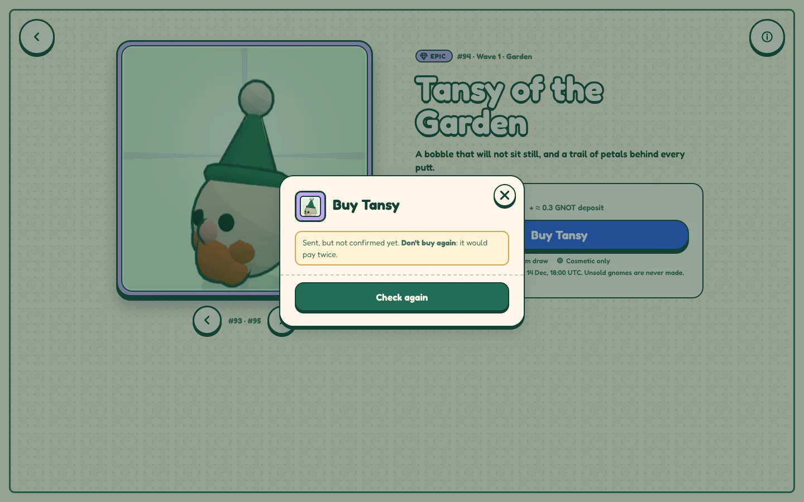
unsure